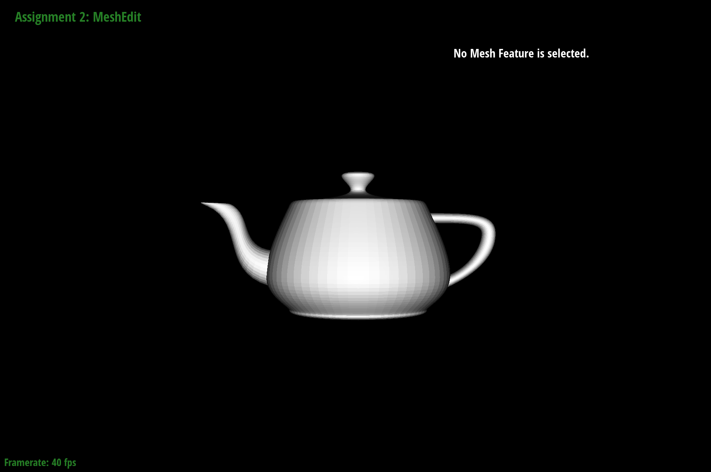
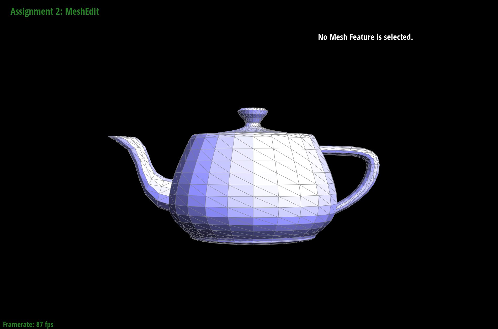
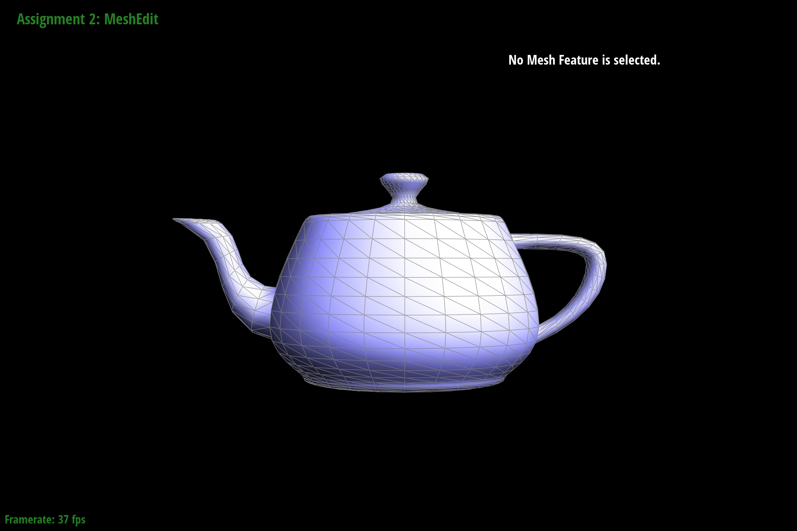

CS184/284A Fall 2026 Homework 2 Write-Up
Names: Arian Namazi, Grégoire Serres
Link to webpage: https://cal-cs184-student.github.io/hw2-go-bears-writeup/
Link to GitHub repository: https://github.com/cal-cs184-student/hw2-go-bears

Overview
In this assignment, we explored how 3D geometry can be represented, evaluated, and modified using different techniques. We implemented algorithms for working with Bézier curves and surfaces, as well as operations for editing and refining triangle meshes.For Bézier geometry, we implemented de Casteljau's algorithm to calculate points on curves and extended the approach to surfaces in order to render a 3D teapot. For triangle meshes, we used the half-edge data structure to calculate vertex normals, flip and split edges, and implement Loop subdivision to create smoother surfaces.
One of the most interesting things we learned was how relatively simple algorithms can be combined to create complex 3D shapes and improve their appearance.
Section I: Bezier Curves and Surfaces
Part 1: Bezier curves with 1D de Casteljau subdivision
Here is an example 2x2 gridlike structure using an HTML table. Each tr is a row and each td is a column in that row. You might find this useful for framing and showing your result images in an organized fashion.
|
|
|
|
|
|
Part 2: Bezier surfaces with separable 1D de Casteljau
The de Casteljau algorithm for Bézier surfaces extends the 1D algorithm by applying it independently along both parameter directions, (u) and (v). A Bézier surface is defined by a grid of control points. First, we applied de Casteljau's algorithm to each row of control points using the parameter (u), resulting in one intermediate point for each row. We then applied the same algorithm to these intermediate points using the parameter (v), producing the final point on the Bézier surface.We implemented this using three functions. evaluateStep performs one interpolation step between adjacent control points using ((1-t)P_i + tP_{i+1}). evaluate1D repeatedly applies this step until only one point remains, giving the Bézier curve evaluation for a given parameter. Finally, evaluate evaluates every row of the control-point grid at (u), stores the resulting points, and evaluates these points at (v). This allows the Bézier surface to be evaluated at any parameter pair ((u,v)).

Section II: Triangle Meshes and Half-Edge Data Structure
Part 3: Area-weighted vertex normals
We implemented the area-weighted vertex normals by traversing all neighboring halfedges around the vertex and accumulating the normal contributions of the adjacent triangles. For each non-boundary triangle, we computed the cross product of two edge vectors from the current vertex. Since the magnitude of the cross product is proportional to the triangle's area, this naturally gives larger triangles a greater weight. After summing these contributions, we normalized the resulting vector to obtain the final unit vertex normal.|
 |
 |